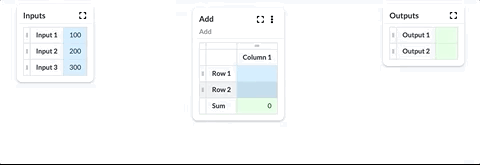
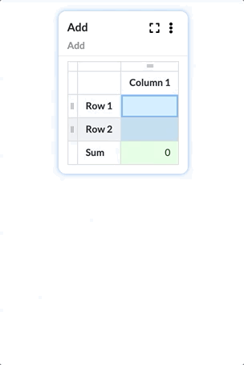

Configure a Function
Calculations are built graphically in Numbrz. A function is a collection of Widgets which provide a variety of capabilities like accepting input, producing output, simple arithmetic, and conditional logic.
Widgets, Cells and Links
A newly created function will have a small number of inputs and outputs already defined and the user can add, remove or rename these. Once the function's inputs and outputs have been configured, the user adds logic to process the input and produce the output. This is done by adding widgets and creating links between widget cells to pass data from one part of the calculation to the next.
You can add a widget in multiple ways:
- Click the + icon in the lower right corner.
- Double-click on any blank area of the function.
- Drag an existing widget cell onto any blank area of the function.
Building out a function is a matter of breaking the calculation into components and creating links to pass the results of one part on to the next. Links between cells are created simply by dragging one cell and dropping it on another.
All functions will have links: at the very minimum to link input cells to one or more widgets and to link the results to one or more output cells.
All widgets support a set of basic interactions: creation, deletion, insertion and deletion of rows or columns, and editing of any cell. Widgets also support a common set of settings that can be viewed and edited by clicking the icon in the upper right corner of the widget.
See also: About Functions, Available Widgets, Flows: Execute Function Step